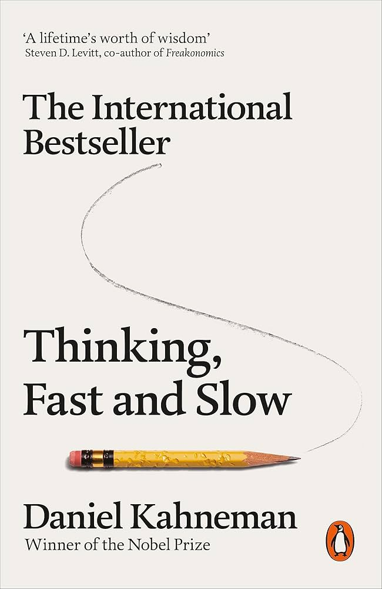
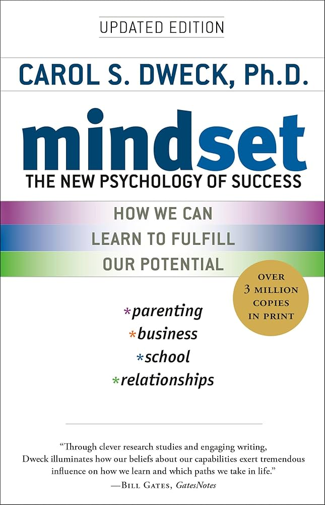
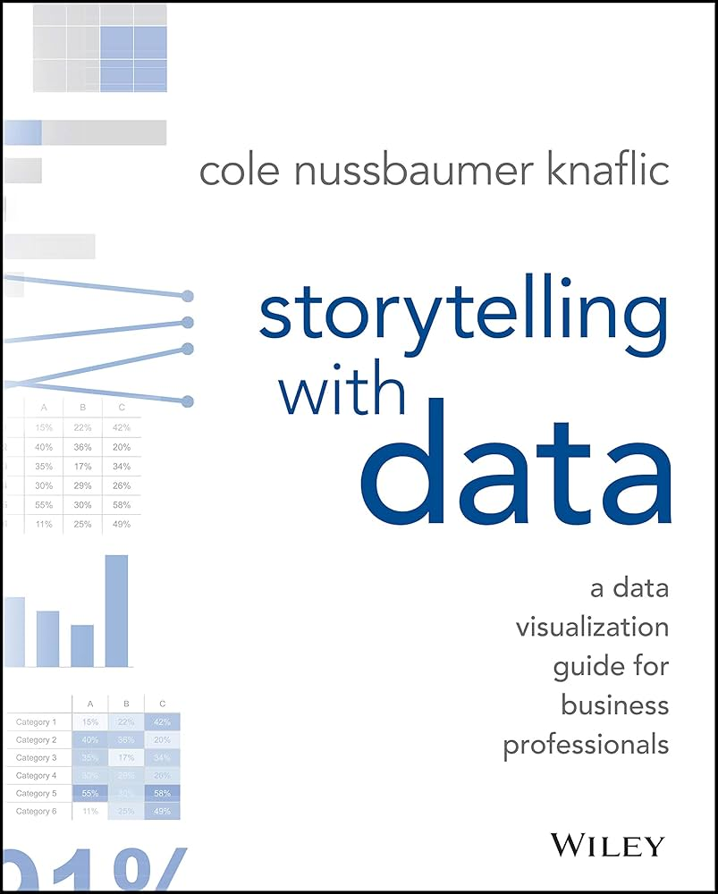
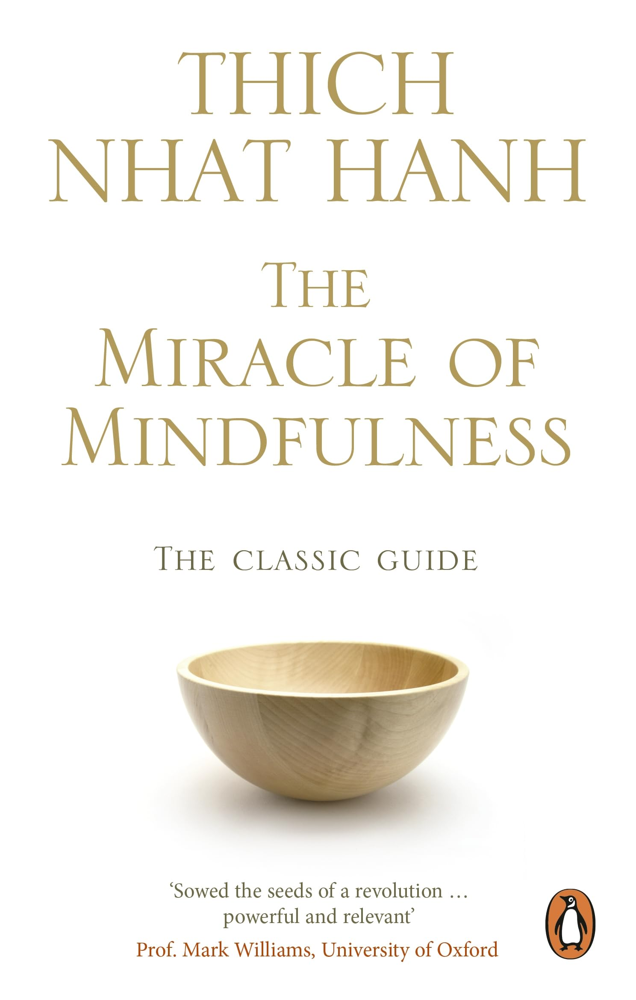
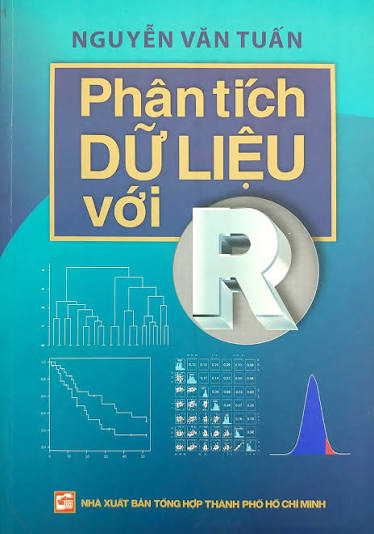

About Me
Trieu Le
I am a researcher with interests in microbial genomics, antimicrobial resistance and bacterial evolution.
My research interests include:
- Microbial genomics
- Plasmid evolution
- Antimicrobial resistance
- Application of genomics and bioinformatics to clinical challenges
Profile
I am a researcher with research interests in infectious diseases, antimicrobial resistance, microbial genomics, bacterial population genomics, and mobile genetic elements.
My current research focuses on using genomic and computational approaches to understand mobile genetic elements and bacterial evolution.
Education
PhD in Life Sciences
University of Bath, United Kingdom
2024–2028
Research focus: microbial genomics, bacterial evolution, pangenomics, and mobile genetic elements.
Supervised by:
Professor Zamin Iqbal link
Dr. Lauren Cowley link
MPhil in Genomic Medicine
University of Cambridge / Wellcome Sanger Institute, United Kingdom
2023–2024
Research focus: microbial genomics and mobile genetic elements in Mycobacteria abscessus.
Supervised by:
Dr. Josie Bryant link
Professor Timothy M. Walker link
BSc in Biology and Biotechnology
University of Science, Vietnam National University Ho Chi Minh City, Vietnam
2014–2018
Research focus: Biotechnology, Stem cell biology and liver disesase.
Supervised by:
Dr. Truong Hai Nhung link
Dr. Le Van Trinh link
Research Experience
PhD Researcher
University of Bath
2024–Present
Research in bacterial population genomics, antimicrobial resistance, plasmids, mobile genetic elements, and bacterial evolution.
Current methodological interests include:
- Long-read bacterial genomics
- Pangenomics
- Plasmid genomics
- Phylogenetics
- Population genomics
- Mobile genetic elements
- Bioinformatics algorithm development and application
MPhil Student
Wellcome Sanger Institute / University of Cambridge
2023–2024
Training and research in genomic science and bioinformatics, with a focus on microbial genomics.
Research Assistant — Tuberculosis Research Group
Oxford University Clinical Research Unit, Vietnam
2018–2023
Supervised by:
Professor Nguyen Thuy Thuong Thuong link
Dr. Trinh Thi Bich Tram link
Ms Do Dang Anh Thu link
Research focused on Mycobacterium tuberculosis, tuberculosis diagnostics, antimicrobial resistance, and genomic approaches to infectious diseases.
Research activities included:
- Tuberculosis microbiology
- Drug-resistance research
- Molecular and genomic diagnostics
- Clinical research
- Bacterial genomics
Research Interests
- Microbial genomics
- Antimicrobial resistance
- Bacterial evolution
- Plasmids and mobile genetic elements
- Bioinformatics
Selected Publications
Phylogenetic distribution and longitudinal persistence of plasmids in Mycobacterium abscessus
Trieu Le, Josephine M. Bryant
Microbial Genomics, 2026.
DOI
Amira: detection of AMR genes directly from long reads using gene-space de Bruijn graphs
Daniel Anderson, Leandro Lima, Trieu Le, Louise Judd, Ryan Wick, Zamin Iqbal
Preprint, 2025.
DOI
Targeted sequencing from cerebrospinal fluid for rapid identification of drug-resistant tuberculous meningitis
Trinh Thi Bich Tram, Le Pham Tien Trieu, Le Thanh Hoang Nhat, Do Dang Anh Thu, Nguyen Le Quang, Nguyen Duc Bang, Tran Thi Hong Chau, Guy E. Thwaites, Timothy M. Walker, Vu Thi Ngoc Ha, et al.
Journal of Clinical Microbiology, 2024.
Technical Skills
Genomics & Bioinformatics
- Short- and long-read bacterial genome sequencing analysis
- De novo genome assembly and genome quality assessment
- Bacterial pangenome and comparative genomic analysis
- Phylogenetic reconstruction and evolutionary analysis
- Population genomics and bacterial population structure
- Plasmid identification, typing, and structural comparative analysis
- Antimicrobial resistance gene and resistance-associated mutation detection
- Identification and genomic characterisation of mobile genetic elements
Computational
- R
- Command-line bioinformatics
- Linux / Unix
- Git and GitHub
- Reproducible genomic workflows
Laboratory & Research
- Bacterial culture
- Mycobacterium tuberculosis research
- BSL-3 laboratory work
- Molecular microbiology
- Clinical research
- Good Clinical Laboratory Practice (GCLP)
- Good Clinical Practice (GCP)
Other activities
- Sustainability and environmental engagement: contributing to the University of Bath Green Impact initiative to promote sustainable practices in research and everyday academic life
- Science communication and public engagement: scientific writing, blogging, and outreach, including Pint of Science
- Teaching: teaching assistant in bioinformatics and genomics
- Practical teaching and assessment: demonstrating and marking in microbiology and molecular biology practicals, cancer biology, and genomics
Academic Service
Peer Review
Reviewer for:
- Nature Communications
- Microbial Genomics
Research Profiles
ORCID · GitHub - Microbial genomics - Bacterial population genomics - Plasmids and mobile genetic elements - Bioinformatics
Books That Shaped My Thinking
These books have influenced how I think about science, learning, decision-making, communication, money, and life.

Thinking, Fast and Slow
Daniel Kahneman
This book made me more aware of how intuition, cognitive biases, and uncertainty influence our decisions. The distinction between fast, intuitive thinking and slower, deliberate reasoning has stayed with me, particularly when I think about scientific evidence and decision-making.
The Psychology of Money
Morgan Housel
This book gave me a different perspective on how people make financial decisions and how strongly those decisions are shaped by behaviour, experience, and personal circumstances. It encouraged me to reflect on my own relationship with money and motivated me to build a more thoughtful, disciplined, and sustainable financial plan for the future.

Mindset
Carol S. Dweck
This book changed how I think about ability and failure. It influenced how I approach learning, research, and new challenges, encouraging me to focus more on progress and improvement rather than being afraid of making mistakes.

Storytelling with Data
Cole Nussbaumer Knaflic
This book changed how I think about presenting scientific results. I learned that a good figure is not simply one that displays the data accurately; it should also help the audience quickly understand the main message.

The 7 Habits of Highly Effective People
Stephen R. Covey
This book made me think more deliberately about how I organise my life and use my time. In particular, the ideas of beginning with the end in mind and putting first things first helped me connect everyday decisions with longer-term goals. It also reminded me that effectiveness is not simply about being productive, but about building good relationships, maintaining balance, and continuously investing in personal growth.

The Miracle of Mindfulness
Thich Nhat Hanh
This book introduced me to Buddhism not only as a religion, but also as a philosophy for understanding the mind, suffering, happiness, and our relationship with the world around us. Thich Nhat Hanh’s approach to mindfulness taught me to pay more attention to the present moment rather than constantly thinking about what comes next.
Tế Bào Gốc (in Vietnamese)
Phan Kim Ngoc
This was the first scientific book I ever owned, a gift from my sister when I turned 17. It sparked my curiosity about stem cells and motivated me to join a stem cell research laboratory later, where I learned the fundamentals of scientific research and gained my first experience at the lab bench. It also encouraged me to think beyond experiments themselves—to consider how discoveries in the laboratory can be translated into biotechnology and real-world applications. Looking back, this book represents where my academic journey began and helped shape the way I think about science: from understanding fundamental biology to asking how that knowledge can ultimately be applied.

How to analyze data with R (in Vietnamese)
Nguyen Van Tuan
Before reading this book, I was almost entirely a wet-lab researcher and felt somewhat intimidated by coding and data analysis. This book helped me understand the logic behind data analysis and made R feel approachable rather than something to avoid. More importantly, it gave me the confidence and motivation to start learning independently and take greater ownership of my data. That small beginning eventually changed the direction of my research journey—today, I use R, coding, and computational tools almost every day.